Serbie 2018
Belgrade: les beaux quartiers (26 septembre 2018)
|
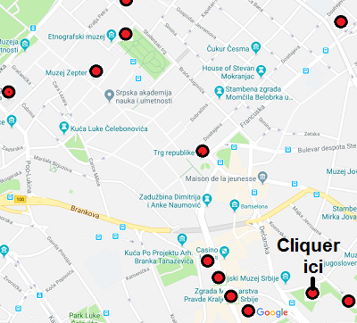 Balayer le plan ci-dessus pour faire apparaître les photos correpondant aux cercles rouges |

|
Belgrade: Le centre-ville et (en cliquant ci-après:) le monument de Kaymakchalan
Belgrade: le Musée National
La Place de la république est en travaux. Le théâtre national est caché sous des bâches. La statue équestre du Prince Michel III Obrenović (celui de la rue: il régna en 1839 puis en 1860) est inaccessible. Après de nombreux détours, nous dénichons l'entrée.
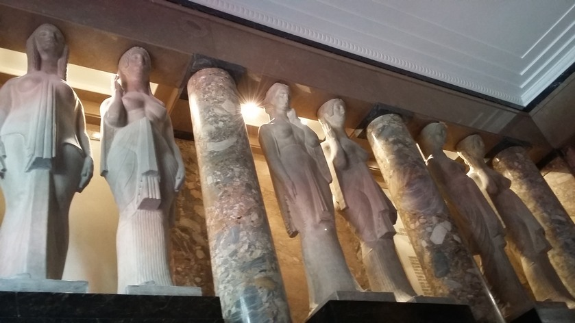
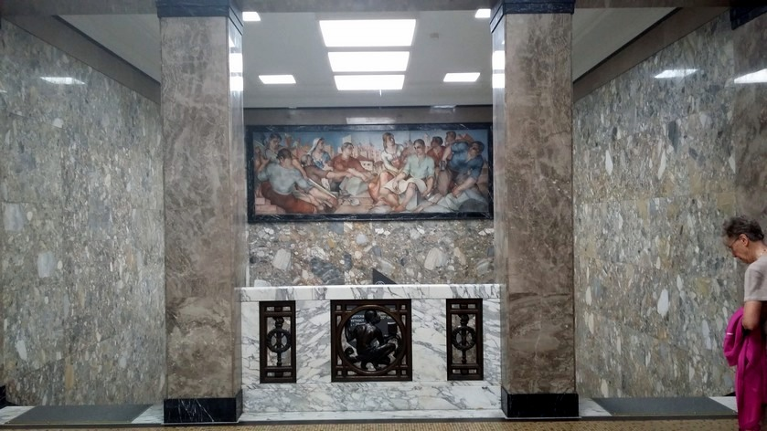
| Numismatique | Antiquités |
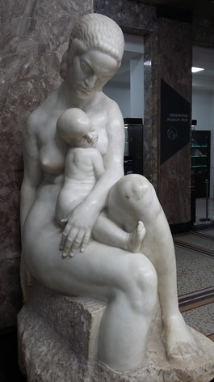
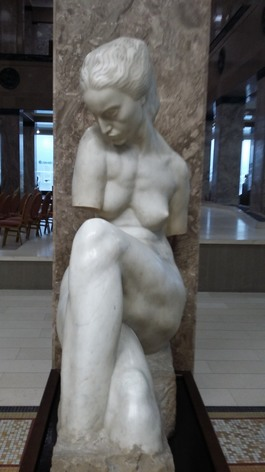
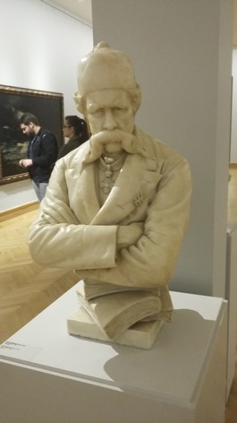
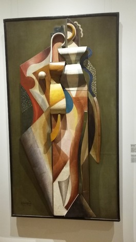
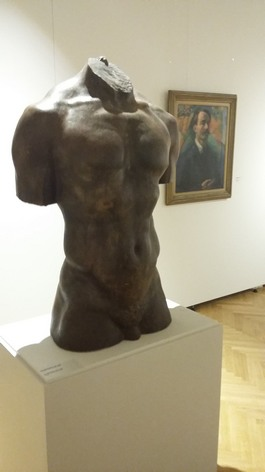
| Religion | Gravures | Naïfs | Portraits | Histoire |
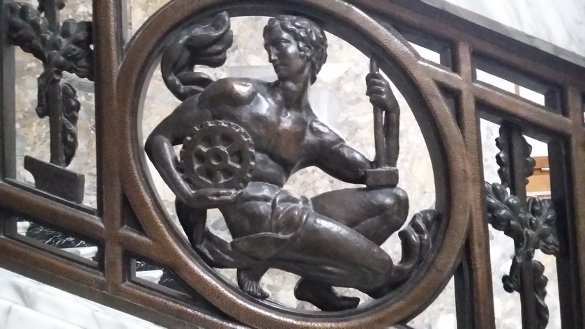
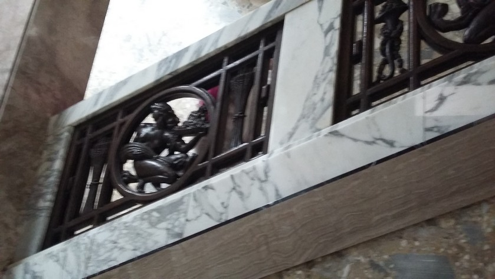
| Peinture européenne | Modernes serbes |
Belgrade: Le Musée national
CLIQUER SUR LES 5 PHOTOS CI-DESSUS
pour accéder aux départements du musée (Numismatique, Antiquités, Gravures polychromes, Peinture naïve,
Portraits, Réalisme historique, Art européen, Art serbe moderne)!
Promenade du Danube
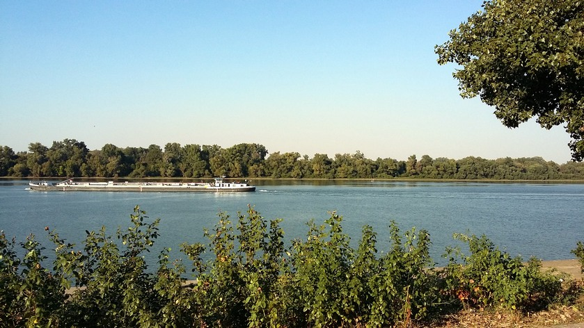
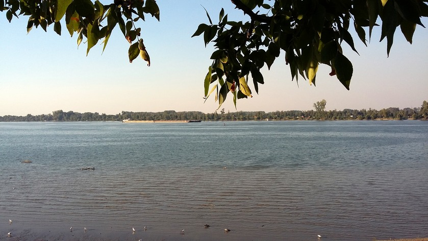
BALAYER L'IMAGE DU HAUT pour afficher 6 vues du Danube.
Nous terminons cette dernière journée complète à Belgrade par une promenade le long du Danube jusqu'au bas-Kalemegdan d'où nous grimpons jusqu'à la forteresse haute, puis traversons le parc pour rejoindre notre hôtel. Il nous reste beaucoup de choses à voir... Une autre fois peut-être.